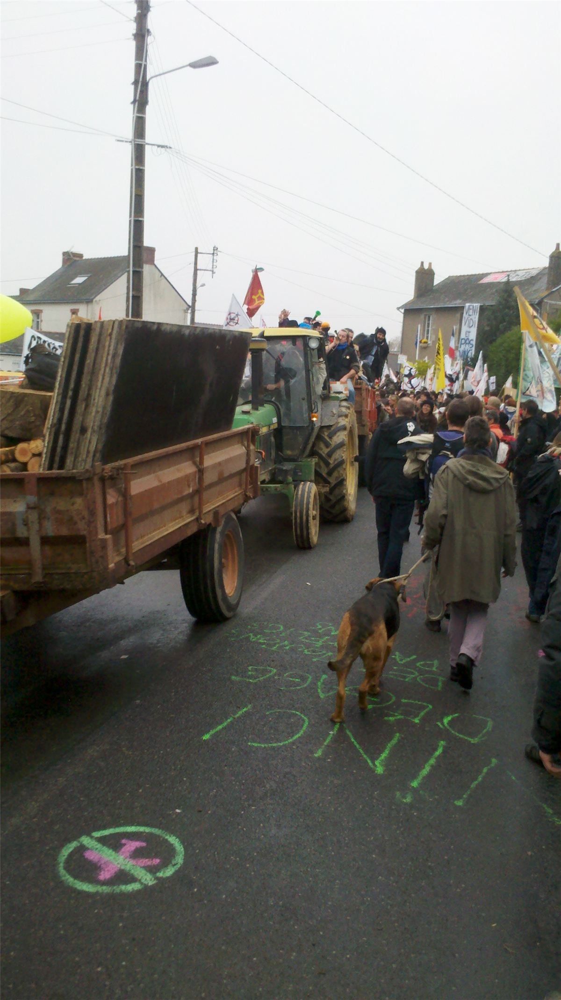

Une victoire ne met pas fin aux débats, elle en ouvre d'autres. La bande à Mamie s'est beaucoup disputée sur la ZAD après 2018, et c'est tant mieux : une lutte qui gagne doit aussi apprendre à ne pas se perdre.
Ce qui a été gagné
- Un aéroport abandonné, contre l'État, une grande multinationale, la majorité des élus et une consultation.
- Un bocage préservé, ses zones humides et ses espèces protégées.
- Des terres qui restent cultivées par des projets collectifs, et une partie rachetée en commun.
- Un modèle de lutte : occuper le terrain plutôt que seulement manifester contre.
2018 : négocier ou pas ?
Après l'abandon de l'aéroport, le mouvement se déchire sur deux questions :
- La route D281, barrée depuis 2013 par des chicanes et des cabanes. L'État exige sa réouverture. Une partie du mouvement accepte de la dégager pour montrer sa bonne foi ; une autre y voit le début de la normalisation. La route est rouverte, dans la douleur.
- Les conventions individuelles. Pour les uns, signer des projets agricoles avec l'État, c'est sauver des lieux de vie et des terres collectives. Pour les autres, c'est accepter de trier entre « bons » occupants légalisables et « mauvais » occupants expulsables, et trahir ceux qui vivaient en dehors de toute règle.
Des occupantes et occupants partent, d'autres restent. Les critiques sont dures, des deux côtés. Pour Mamie, il n'y a pas de réponse simple : c'est le dilemme de toutes les luttes qui gagnent assez pour avoir quelque chose à perdre. Les anarchistes espagnols de 1936 l'ont connu, dans une tout autre mesure (voir les dilemmes de la révolution espagnole).
Le prix de la lutte
La lutte a coûté cher : des centaines de blessés, des mutilations, des procès, des années de vie sous la pression policière, des épuisements. Elle a aussi vu des conflits internes durs, y compris des violences, qu'il a fallu régler sans police ni tribunal. Pour se préparer à ce genre de lutte, la bande à Mamie conseille les fiches Street medic et Legal Team.
Les ZAD et après
Notre-Dame-des-Landes a fait école. Le mot « ZAD » désigne désormais toute occupation d'un lieu menacé par un grand projet.
- À Sivens, dans le Tarn, contre un barrage, le jeune botaniste Rémi Fraisse est tué par une grenade offensive des gendarmes le 26 octobre 2014. Le projet est abandonné.
- À Bure, dans la Meuse, la lutte contre l'enfouissement des déchets nucléaires reprend les méthodes de la ZAD.
- En 2021, d'anciens de la ZAD et d'autres collectifs lancent les Soulèvements de la Terre, contre l'accaparement de l'eau et des terres. Le gouvernement tente de les dissoudre en 2023 ; le Conseil d'État annule la dissolution.

Comparer avec les autres expériences
| Mai 68 | Zapatistes | ZAD | |
|---|---|---|---|
| Durée | Quelques semaines | Depuis 1994 | Depuis 2009 |
| Territoire | Usines, facs, quartiers | Communautés mayas | Un bocage de 1 650 hectares |
| Décision | AG, comités d'action | Assemblées, charges tournantes | Assemblées, consensus |
| Rapport à l'État | Rendu aux élections | Construit sans lui | Négocie sous la contrainte |
À retenir
- Une lutte peut gagner contre l'État et une multinationale.
- La victoire pose de nouvelles questions : négocier, légaliser, ou continuer à vivre en dehors des règles.
- L'héritage est vivant : zapatistes, ZAD et Soulèvements partagent l'idée de défendre et habiter un territoire.
Sources et pour aller plus loin
Lire
- Contrées, collectif Mauvaise Troupe, L'Éclat, 2016.Pour comparer la ZAD et la lutte No TAV en Italie.
Sur le web
- La mort de Rémi FraisseSivens, octobre 2014.
- Les Soulèvements de la TerreL'héritier le plus visible de la ZAD.
- zad.nadir.orgLes débats de 2018 vus par les occupantes et occupants.
Dossier rédigé par la bande à Mamie à partir de travaux d'historiennes et d'historiens et de textes des mouvements concernés. Libre de reproduction.